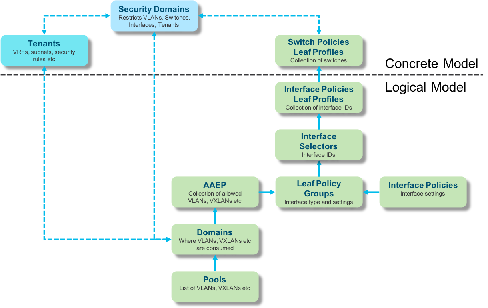
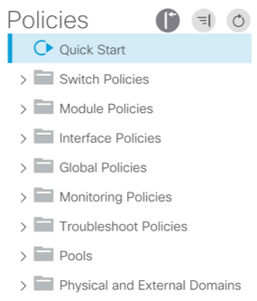

ACI: Configuring network interfaces
ACI interface configuration is achieved by defining a series of related policies (Managed Objects) which are modeled in a logical “space” before being applied to one or more physical switches.
The ability to model once and apply many times is a key feature of an ACI fabric.
Configuring switch interfaces is really easy to do once you understand the MO model (shown below). In fact if you’re used to configuring a switch you just need to translate something that you already know to the language of ACI.

First you need to navigate to Fabric | Access Polices…..

…..and then working from the bottom up it’s time to do some configuration - it’s always worth tidying up and closing the folders as you go along.
VLAN Pools are simply a list of VLANs that can be used on the fabric. The VLANs can either be preconfigured within a pool or they can be added to the pool as required - just like configuring a VLAN range on any other switch.
There are two types of VLAN pools, either static or dynamic.
I personally like to create a dynamic pool with static ranges.
-
Static VLANs are allocated manually by the system administrator to match an incoming VLAN ID on given interfaces.
-
Dynamic VLANs are allocated by APIC to automatically configure an EPG. For example APIC can automatically push a VLANs to a VMware port group or to a firewall for service insertion.
Domains are a security function which restricts where VLANs can be consumed, for example the VLANs in Pool X consumed by physical servers.
Attachable Access Entity Profiles otherwise known as (AAEPs) map VLANs from a given VLAN pool to a Leaf Policy Group which is simply an interface template.
Interface Policies are the settings that you want to apply to an interface, e.g. interface speed, cdp, lldp, VLAN significance etc.
Leaf Policy Groups are a combination of Interface Policies such as interface speed, cdp, lldp, VLAN significance etc. Leaf Policy Groups either be of type Access, Port-Channel, or Virtual Port-Channel.
It’s important to understand that Leaf Policy Groups of type Access can be used across many interfaces, whereas Leaf Policy Groups of type Port-Channel and Virtual Port-Channel have to be unique per attached device because under the covers a unique port-channel ID is created.
Leaf Profiles (Interface Policies) are a collection of Interfaces Selectors which in turn contain the physical interface e.g. eth1/1.
The actual interfaces are configured by mapping a Leaf Policy Group to a given interface ID. Leaf Profiles can be mapped to one or more switches (Leaf Profile | Switch Policies).
Leaf Profiles (Switch Policies) represent one or more physical switches where Leaf Profiles (Interface Policies) are applied, for example:
- Leafs_1_and_2
- Leafs_3_and_4
- Leafs_1_to_4
After reading this I’m sure that you think that it’s a lot of work to do, and to be fair if you were configuring a single interface on a single switch there are a lot of steps to do. That said, once you’ve made one template you can re-use it time and again.